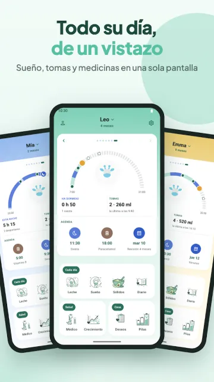

En esta página · 10 secciones
En resumen
Huckleberry es una buena app, sobre todo si buscas ayuda con el sueño: sus planes de pago Plus y Premium añaden las predicciones de siestas SweetSpot y planes de sueño personalizados. Si lo que quieres es sobre todo registrar tomas, sueño y pañales sin suscripción, Baby Tracker (Nighp) y Baby Daybook son las alternativas con más reseñas en Google Play, y Raffy, la app que hacemos nosotros, es una opción gratis y sin anuncios solo para Android. Si elegiste Huckleberry por su asesoramiento de sueño, las demás apps de esta lista no mencionan planes de sueño diseñados por expertos en sus fichas de la tienda.
Transparencia: hacemos Raffy, una de las alternativas de abajo. Las alternativas van ordenadas por número de reseñas en Google Play, de más a menos, así que Raffy queda la última. Cada dato procede de la ficha de Google Play de la propia app, de su web oficial o de su página de la App Store, consultadas el 3 nov 2026 (valoraciones y descargas de Google Play, revisadas de nuevo el 6 nov 2026). Cuando una página no dice algo, escribimos "no indicado". Para una lista más amplia que incluya Huckleberry, consulta nuestras mejores apps de seguimiento del bebé para Android.
Huckleberry, descrito con justicia
Una app de seguimiento del bebé construida en torno al sueño. Su nivel gratuito registra sueño, tomas, pañales y crecimiento; los planes de pago añaden las predicciones de siestas SweetSpot, horarios y planes de sueño personalizados. En Google Play muestra 4,9 estrellas con 37,3K reseñas y 1M+ descargas (Google Play, consultado el 6 nov 2026).

- Ideal para: Familias que quieren orientación sobre el sueño, predicciones de siestas o un plan de sueño estructurado, y están dispuestas a pagar por ello. También encaja en hogares con iPhone.
- No ideal si: Quien quiere predicciones sin suscripción, o necesita la app en otro idioma, porque su ficha de la App Store indica solo inglés.
- Precio: Freemium. Su página de precios muestra Free ($0), Plus a $5.74 al mes facturado anualmente y Premium a $9.99 al mes facturado anualmente (la página solo muestra el signo "$", sin código de moneda). Plus añade las predicciones SweetSpot, Schedule Creator, Insights, Enhanced Reports y registro con IA. Premium añade el chat de IA Berry y Custom Sleep Plans. Los precios dentro de la app en la App Store de EE. UU. difieren de los de la página de precios, así que comprueba el precio que muestra la app antes de suscribirte.
- Plataformas: Android y iOS.
- Idiomas de la app: App Store: solo inglés. Google Play: no indicado.
- Funciones clave: Registros con un toque de sueño, tomas, pañales y crecimiento, temporizador de lactancia, seguimiento de sólidos y alérgenos, varios hijos, sincronización entre cuidadores, y predicciones y planes de sueño de pago.
Los motivos para buscar otra opción suelen ser prácticos: el precio de los planes de pago, querer un registro más sencillo sin asesoramiento, o querer la app en otro idioma.
Comparativa rápida
| App | Modelo de precio | Plataformas | Idiomas de la app | Funciones destacadas |
|---|---|---|---|---|
| Huckleberry | Freemium: nivel gratis; suscripciones Plus y Premium | Android, iOS | App Store: solo inglés; Play: no indicado | Predicciones de siestas SweetSpot, planes de sueño personalizados, chat de IA Berry (de pago) |
| Baby Tracker (Nighp) | Gratis con anuncios; suscripción Plus o pago único Remove Ads | Android, iOS | App Store: 14; Play: no indicado | Registros de alimentación, sueño, pañales y extracción, gráficos, sincronización entre cuidadores |
| Baby Daybook | Gratis con anuncios; Premium (mensual, anual US$59.99 o de por vida en la App Store de EE. UU.) quita los anuncios | Android (incl. Wear OS), iOS | App Store: 40; Play: no indicado | Predicciones de sueño, sincronización familiar, registro de salud, informes imprimibles |
| Glow Baby | Gratis con anuncios; Premium $59.99 al año tras una prueba de 7 días | Android, iOS | App Store: 4; Play: no indicado | Registros de alimentación, sueño y pañales, hitos, artículos y consejos |
| Sprout Baby | Gratis para instalar; suscripción Premium con prueba gratuita (precio no indicado) | Android, iOS | No indicado | Gráficos de crecimiento con ajuste por prematuridad, registro de salud, tendencias |
| Raffy | Gratis: sin plan premium, sin anuncios, sin compras dentro de la app | Solo Android | Inglés, español, francés, portugués | Sin anuncios, funciona sin conexión y sin cuenta, widget de alimentación, banco de leche |
Huckleberry es la primera fila como referencia; las cinco alternativas van después, en el orden de las secciones de abajo.
1. Baby Tracker - Newborn Log (Nighp)
Un registro veterano de tomas, sueño, pañales, extracción de leche y crecimiento, creado por Nighp Software. Es la app con más reseñas de esta lista. Si quieres un seguimiento sencillo y muy usado en lugar de un producto de asesoramiento del sueño, es la más parecida al lado gratuito de Huckleberry.

- Ideal para: Familias que quieren un registro directo con gráficos y sincronización entre cuidadores, y a las que no les molestan los anuncios de la versión gratuita.
- No ideal si: Quien quiere una app sin anuncios sin pagar, o planes de sueño diseñados por expertos.
- Precio: Gratis con anuncios. Una suscripción opcional "Baby Tracker Plus" quita los anuncios y añade avisos de horarios "What's Next", y existe una compra única "Remove Ads". Google Play indica que el seguimiento básico sigue siendo gratis. La ficha de la App Store de EE. UU. muestra Remove Ads a $4.99, y Plus a $5.99 al mes o $49.99 al año.
- Plataformas: Android y iOS (iPhone, iPad).
- Idiomas de la app: La App Store indica inglés y 13 más, entre ellos español, francés y portugués. La ficha de Google Play no indica los idiomas.
- Funciones clave: Temporizador de lactancia, registros de biberón y extracción, temporizador de sueño con recordatorios, registro de pañales, seguimiento del crecimiento con curvas de la OMS, notas de medicación y vacunas, gráficos diarios a mensuales, sincronización entre dispositivos y cuidadores.
- Google Play: 4,9 estrellas con 72,1K reseñas, 1M+ descargas (Google Play, consultado el 6 nov 2026)
2. Baby Daybook - Newborn Tracker
Un seguimiento completo con función de predicción del sueño, widgets y una app para Wear OS. La ficha de Google Play indica como desarrollador a Baltapis. Es la alternativa más cercana a Huckleberry en sueño: su ficha de Play anuncia predicciones de sueño personalizadas y recordatorios de siestas. No menciona planes de sueño diseñados por expertos.

- Ideal para: Familias que quieren predicciones de sueño, una línea de tiempo visual y sincronización familiar en una sola app, en Android o iPhone.
- No ideal si: Quien quiere no ver anuncios sin suscripción.
- Precio: Gratis con anuncios. Una suscripción Premium quita los anuncios, funciona en dispositivos Android e iOS y extiende Premium a los cuidadores de perfiles de bebé compartidos. La App Store de EE. UU. muestra las opciones Premium Mensual, Anual (US$59.99) y De por vida, con más de un precio indicado en algunas. No encontramos un precio público único de los planes en la ficha de Google Play ni en la web oficial.
- Plataformas: Android (incluido Wear OS) y iOS.
- Idiomas de la app: La App Store indica inglés y 39 más, entre ellos español, francés y portugués. La ficha de Google Play no indica los idiomas.
- Funciones clave: Predicciones de sueño con línea de tiempo visual, registros de alimentación, extracción y sólidos, registro de pañales y orinal, crecimiento frente a curvas de los CDC y la OMS, registro de salud (síntomas, medicamentos, visitas al médico, vacunas), sincronización familiar en tiempo real, informes imprimibles, widgets.
- Google Play: 4,7 estrellas con 69,3K reseñas, 1M+ descargas (Google Play, consultado el 6 nov 2026)
3. Baby Tracker App | Glow
La app de seguimiento del bebé de Glow Inc, parte de una familia de apps de salud Glow. La ficha de Play la describe como impulsada por IA e incluye también artículos y consejos. Elígela si quieres un seguimiento con material de lectura; su valoración en Google Play es la más baja de las apps comparadas aquí, así que lee antes las reseñas recientes.

- Ideal para: Familias a las que les gustan los consejos y artículos junto a sus registros, y que aceptan los anuncios de la versión gratuita.
- No ideal si: Quien quiere una app gratuita sin anuncios, o un seguimiento sencillo sin capa de contenidos.
- Precio: Gratis con anuncios. Glow Premium es una sola membresía para las cuatro apps Glow: 7 días de prueba gratis y después $59.99 al año (la página solo muestra el signo "$"). Premium incluye una experiencia sin anuncios.
- Plataformas: Android y iOS.
- Idiomas de la app: La App Store indica inglés, francés y chino (simplificado y tradicional). La ficha de Google Play no indica los idiomas.
- Funciones clave: Registro de pañales, lactancia y extracción, registro de alimentación, seguimiento del sueño, hitos, registros de crecimiento, artículos sobre el cuidado del recién nacido.
- Google Play: 3,9 estrellas con 14,7K reseñas, 1M+ descargas (Google Play, consultado el 6 nov 2026)
4. Baby Tracker by Sprout
Una app de seguimiento de Sprout Apps con registros de alimentación, sueño, pañales, crecimiento y salud. Es una app mucho más pequeña que las demás en Google Play. Es una alternativa más ligera, con una prueba gratuita de sus funciones premium; comprueba el precio dentro de la app antes de suscribirte, porque no encontramos ninguno en su ficha de la tienda.

- Ideal para: Familias que quieren seguir el crecimiento con curvas de la OMS y los CDC, con ajuste para bebés prematuros, además de un registro de salud para visitas y vacunas.
- No ideal si: Quien quiere una gran base de usuarios y un largo historial de reseñas: tiene 209 reseñas en Google Play.
- Precio: Gratis para instalar, con compras dentro de la app. Premium tiene una prueba gratuita y se renueva automáticamente; la ficha no indica ningún precio.
- Plataformas: Android y iOS.
- Idiomas de la app: No indicado.
- Funciones clave: Temporizador de lactancia, registros de biberón y sólidos, registro de sueño con recordatorios, pañales, crecimiento en curvas de la OMS y los CDC, hitos, registro de salud con visitas y vacunas, gráficos de tendencias, sincronización con cuidadores.
- Google Play: 4,1 estrellas con 209 reseñas, 10K+ descargas (Google Play, consultado el 6 nov 2026)
5. Raffy: Baby Tracker & Feeding
La app que hacemos nosotros. Un seguimiento tranquilo de tomas, sueño y crecimiento que funciona sin conexión y no necesita cuenta. Es gratis y sin plan premium, así que no hay nada a lo que mejorar; la contrapartida es que es solo para Android, más nueva y sin asesoramiento de pago.
- Ideal para: Familias con Android que quieren una app gratis y sin anuncios, el crecimiento en curvas de la OMS, un widget de alimentación en la pantalla de inicio y una interfaz en inglés, español, francés o portugués.
- No ideal si: Quien use iPhone, porque no hay app para iOS. Tampoco para quien quiera predicciones de sueño o asesoramiento del sueño: la ficha describe registros de sueño y recordatorios, no predicciones. Además no tiene registro de pañales, ni exportación de datos, ni forma de invitar a un segundo cuidador. Es la app más nueva y más pequeña de la lista.
- Precio: Gratis: sin plan premium, sin anuncios, sin compras dentro de la app.
- Plataformas: Solo Android (sin app para iPhone).
- Idiomas de la app: Inglés, español, francés y portugués.
- Funciones clave: Biberones en ml o fl oz y temporizador de lactancia izquierda/derecha, registro de sueño con recordatorios de siesta y de hora de acostarse, peso, talla y perímetro cefálico en curvas de la OMS con percentiles, planificador de sólidos y lista de alimentos probados, citas, registro de temperatura y medicamentos, diario de fotos, banco de leche materna, varios hijos, inicio de sesión opcional para copia de seguridad y sincronización.
- Google Play: aún sin valoración en estrellas, 50+ descargas (Google Play, consultado el 6 nov 2026)
Prueba Raffy, gratis y sin anuncios
Tomas, sueño y crecimiento en curvas de la OMS en una sola app Android. Sin plan premium, sin anuncios.

¿Quedarte o cambiar?
- Quédate con Huckleberry si sus predicciones SweetSpot o un plan de sueño te están funcionando.
- Elige Baby Daybook si quieres predicciones de sueño y una línea de tiempo, y aceptas anuncios o una suscripción Premium.
- Elige Baby Tracker (Nighp) si quieres un registro sencillo y muy usado y te basta la versión gratuita.
- Elige Raffy si usas Android, quieres una app gratis, sin anuncios ni suscripción, y no necesitas predicciones ni asesoramiento. Si alguien de la familia usa iPhone, Raffy no es una opción.
Si solo necesitas una respuesta rápida sobre el horario de las siestas, prueba el planificador de ventanas de sueño gratuito antes de pagar un plan. Para lo básico del registro, consulta nuestra guía de apps Android de seguimiento del bebé y el estimador de cantidad de alimentación.
Seguridad pediátrica
- Una app de seguimiento registra lo que tú le indicas. No puede diagnosticar nada, y una "predicción" de sueño o de alimentación es una guía de patrones, no una regla.
- Si tu bebé cuesta despertarlo, rechaza las tomas, moja muy pocos pañales o parece encontrarse mal, llama a tu pediatra, diga lo que diga la app.
Preguntas frecuentes
¿Cuál es la mejor alternativa a Huckleberry en Android?
Depende de por qué te vas. Para un registro sencillo, Baby Tracker (Nighp) y Baby Daybook son las que más reseñas tienen en Google Play. Para una app gratis y sin anuncios, Raffy es una opción solo en Android. Ninguna de las alternativas de aquí menciona planes de sueño diseñados por expertos como Huckleberry Premium.
¿Huckleberry es gratis?
En parte. Huckleberry tiene un nivel gratuito para registrar sueño, tomas, pañales y crecimiento. Su página de precios muestra Plus a $5.74 al mes facturado anualmente y Premium a $9.99 al mes facturado anualmente. Las predicciones y los planes de sueño requieren un plan de pago.
¿Hay una alternativa gratuita a Huckleberry sin anuncios?
Raffy es gratis, sin anuncios, sin plan premium y sin compras dentro de la app, pero es solo para Android. Baby Tracker (Nighp), Baby Daybook y Glow son gratis con anuncios y venden una mejora de pago.
¿Alguna alternativa tiene predicciones de sueño como SweetSpot?
Baby Daybook anuncia predicciones de sueño y Baby Tracker (Nighp) ofrece avisos de horarios "What's Next" opcionales. Raffy registra el sueño y envía recordatorios, pero no menciona predicciones. No hemos comparado cuál es la precisión de ninguna.
Fuentes
- Google PlayFicha de Huckleberry: Baby Tracker (consultado el 6 nov 2026)
- HuckleberrySitio web oficial (consultado el 3 nov 2026)
- HuckleberryPágina de precios (consultado el 3 nov 2026)
- Apple App StoreFicha de Huckleberry (EE. UU.) (consultado el 3 nov 2026)
- Google PlayFicha de Baby Tracker - Newborn Log (consultado el 6 nov 2026)
- Nighp SoftwareSitio web de Baby Tracker (consultado el 3 nov 2026)
- Apple App StoreFicha de Baby Tracker - Newborn Log (EE. UU.) (consultado el 3 nov 2026)
- Google PlayFicha de Baby Daybook - Newborn Tracker (consultado el 6 nov 2026)
- Baby DaybookSitio web oficial (consultado el 3 nov 2026)
- Apple App StoreFicha de Baby Daybook - Newborn Tracker (EE. UU.) (consultado el 3 nov 2026)
- Google PlayFicha de Baby Tracker App | Glow (consultado el 6 nov 2026)
- GlowPágina de Glow Baby y Glow Premium (consultado el 3 nov 2026)
- Apple App StoreFicha de Glow Baby Tracker (EE. UU.) (consultado el 3 nov 2026)
- Google PlayFicha de Baby Tracker by Sprout (consultado el 6 nov 2026)
- Sprout AppsSitio web oficial (consultado el 3 nov 2026)
- Google PlayFicha de Raffy: Baby Tracker & Feeding (consultado el 6 nov 2026)
Última revisión: 6 nov 2026 para valoraciones, descargas y capturas de Google Play; 3 nov 2026 para precios, plataformas, idiomas y funciones. Cada dato de arriba se leyó en estas páginas en esa fecha y puede cambiar. Es una comparativa educativa, no consejo médico. Política editorial